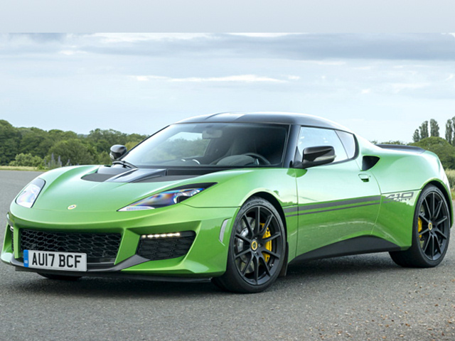

Нажмите на изображение, чтобы открыть в полном размере (новая вкладка)
Lotus Evora GT410 — флагманское купе с компоновкой 2+2, выпускавшееся до 2021 года. Является одним из последних GT-автомобилей Lotus с двигателем внутреннего сгорания.
Evora GT410 сочетает алюминиевое шасси и композитный кузов, обеспечивая низкую массу и высокую жёсткость. Наддувный V6 объёмом 3.5 литра выдает 410 л.с., что позволяет разгоняться до 100 км/ч за 3.9 секунды. Автомобиль оснащён адаптивной подвеской, позволяющей комфортно путешествовать на дальние расстояния, не теряя спортивного характера. Салон 2+2, отделанный кожей и алькантарой, делает Evora идеальным GT для ежедневного использования.